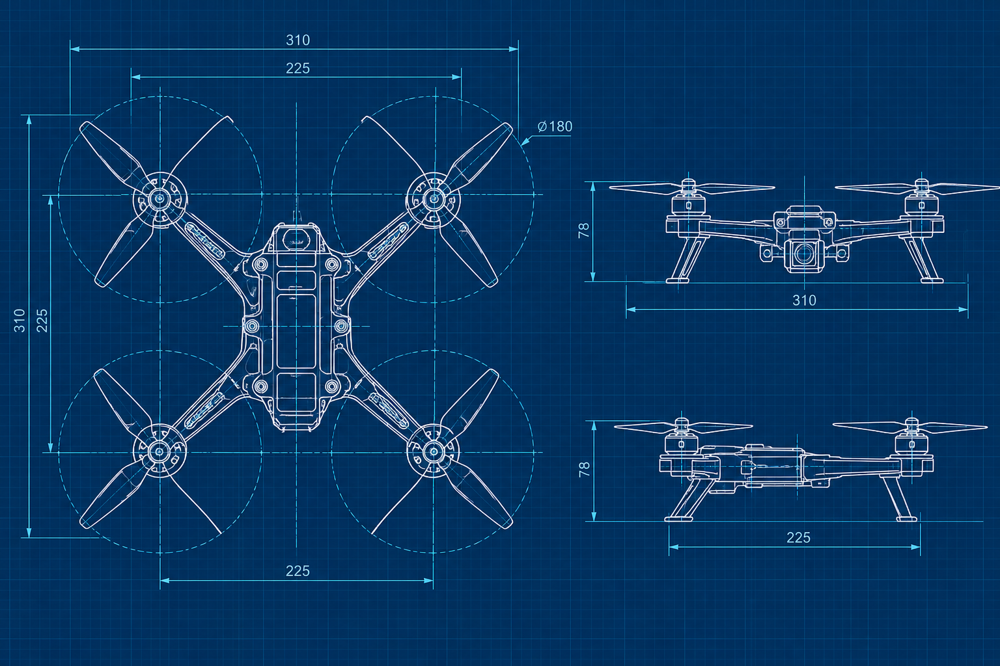

EJEMPLOPlano de un cuadricóptero
Ejemplo ilustrativo de un plano técnico que muestra las dimensiones y la estructura de un dron.
Diseño e Ingeniería
Explora planos técnicos con medidas, vistas y dimensiones para drones de ala fija, multirrotores, VTOL e híbridos.

EJEMPLOEjemplo ilustrativo de un plano técnico que muestra las dimensiones y la estructura de un dron.